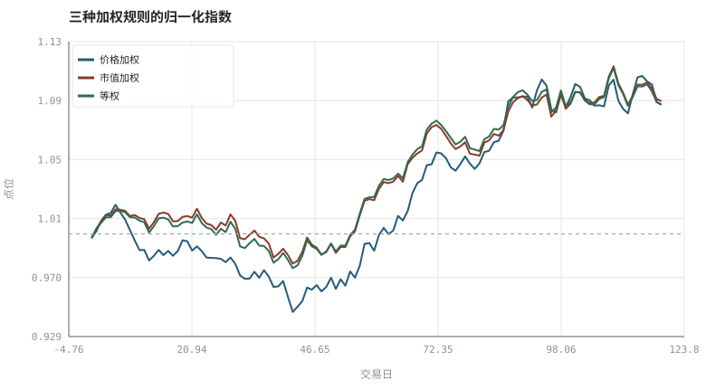
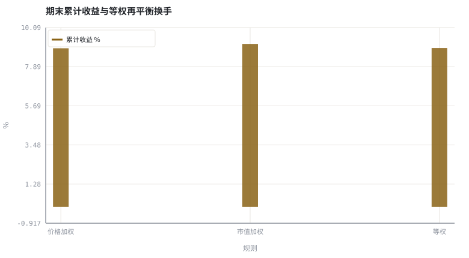

第 11 章指数、折溢价与 ETF 套利机制
指数不是资产，而是一份公开的、可复现的计算规则。
本章位置：第 10 章给单个资产定价，本章给一篮子资产定规则；第 13 章 · 均值-方差、有效前沿与夏普比率 转向「如何主动选择权重」，第 21 章 · 因子、CAPM 与 Fama-French 转向「权重背后的因子补偿」。
指数是一份公开的纯函数 index(prices, shares, rule) -> level；除数 D 是处理 schema 变更的兼容层，调样是一次带公告的版本发布，折溢价则是两个副本之间的复制延迟。
- 能实现价格加权、市值加权、等权三种指数并比较差异。
- 能解释等权指数为何需要再平衡以及再平衡带来的换手。
- 能写出 ETF 折溢价套利的成本边界与收益表达式。
- 能说明指数成分调整对被动产品的影响。
§知识点地图
每个知识点都配了 1～2 个扩展学习链接；本章完整资源清单见 扩展学习。
| # | 知识点 | 扩展学习 | 状态 |
|---|---|---|---|
| 1 | 价格加权指数 | Exchange-traded fund · Net asset value | 正文已覆盖 |
| 2 | 市值加权指数 | Exchange-traded fund · Net asset value | 正文已覆盖 |
| 3 | 等权指数 | Exchange-traded fund · Net asset value | 正文已覆盖 |
| 4 | 除数与公司行动 | Exchange-traded fund · Net asset value | 正文已覆盖 |
| 5 | 定期调样与再平衡 | Rebalancing investments · Asset allocation | 正文已覆盖 |
| 6 | 折溢价与套利边界 | Exchange-traded fund · Net asset value | 正文已覆盖 |
| 7 | 申赎清单 PCF | Exchange-traded fund · Mutual fund | 正文已覆盖 |
| 8 | 跟踪误差来源 | Tracking error · Exchange-traded fund | 正文已覆盖 |
§11.1三种加权规则，三种隐含押注
I_price = ΣP_i / D | I_cap = Σ(P_i × Q_i) / D | I_equal = (1/n) Σ (P_i,t / P_i,0)
价格加权让高价股天然权重大（并需要「除数」D 处理拆股）；市值加权让大公司主导，是主流宽基的规则；等权则内含小盘与反转暴露，因为要定期卖出涨多的、买入跌少的。
| 规则 | 权重来源 | 隐含偏向 | 维护成本 |
|---|---|---|---|
| 价格加权 | 股价 | 高价股 | 拆股需调整除数 |
| 市值加权 | 自由流通市值 | 大市值 / 动量 | 成分调整、自由流通因子 |
| 等权 | 1/n | 小盘 / 均值回复 | 高频再平衡换手 |
| 因子加权 | 打分（价值、质量等） | 目标因子 | 规则透明度与调样成本 |
§11.2无套利边界：把折溢价写成不等式
套利空间 ≈ |价格 − NAV| − (申赎费 + 交易成本 + 冲击成本 + 资金成本)
只有严格大于零才值得动手，且真实执行还受申赎清单、停牌成分股、跨境时差与 T+n 交收约束。因此折溢价通常不是错误定价，而是摩擦的报价。这也为第 29 章的执行成本提供了一个可观测的实例。
§11.3调样：规则里的隐式交易
指数公司按规则定期调整成分股。被动基金必须在生效日附近交易，于是产生可预测的成交量与价格冲击；主动资金常提前布局。对程序员来说，指数是一段公开的版本化脚本：输入成分与价格，输出点位与权重，而每次调样就是一次强制发布。
§Python 分析实例
实验 11-1 · 三种指数加权规则、换手与套利边界
#!/usr/bin/env python3
# -*- coding: utf-8 -*-
"""合成五只成分股，计算三种加权指数，估计等权再平衡换手，并计算折溢价套利空间。
数据为合成数据或模型示意，仅用于教学，不构成投资建议。
"""
from __future__ import annotations
import math
import pathlib
import random
import statistics
import sys
sys.path.insert(0, str(pathlib.Path(__file__).resolve().parents[3] / "tools"))
from chart import Chart, candlestick, heatmap, BLUE, RED, GREEN, AMBER
FIG = pathlib.Path(__file__).resolve().parents[1] / "fig"
FIG.mkdir(exist_ok=True)
random.seed(7)
# ---- 参数区 ----
N = 120 # 交易日
N_ASSETS = 5
START_PRICES = [12.0, 28.0, 45.0, 8.0, 60.0]
SHARES = [9.0e8, 4.0e8, 2.5e8, 1.2e9, 1.5e8]
REBAL_EVERY = 20 # 等权指数再平衡周期
PREMIUM = 0.012 # 观察到的溢价
ARB_COST = 0.003 # 申赎 + 交易 + 冲击成本
CAP = 1000000.0 # 套利资金
# ---- 计算与作图 ----
rng = random.Random(7)
mu = [0.0006, 0.0004, 0.0003, 0.0008, 0.0002]
paths = []
for j in range(N_ASSETS):
px, row = START_PRICES[j], []
for _ in range(N):
px *= (1 + rng.gauss(mu[j], 0.012))
row.append(px)
paths.append(row)
price_idx = [sum(paths[j][i] for j in range(N_ASSETS)) /
sum(START_PRICES) for i in range(N)]
cap0 = sum(START_PRICES[j] * SHARES[j] for j in range(N_ASSETS))
cap_idx = [sum(paths[j][i] * SHARES[j] for j in range(N_ASSETS)) / cap0
for i in range(N)]
eq_idx = [statistics.fmean(paths[j][i] / START_PRICES[j]
for j in range(N_ASSETS)) for i in range(N)]
turnover, w = 0.0, [1.0 / N_ASSETS] * N_ASSETS
for i in range(1, N):
vals = [w[j] * paths[j][i] / paths[j][i - 1] for j in range(N_ASSETS)]
tot = sum(vals)
w = [v / tot for v in vals]
if i % REBAL_EVERY == 0:
turnover += sum(abs(x - 1.0 / N_ASSETS) for x in w) / 2
w = [1.0 / N_ASSETS] * N_ASSETS
arb = CAP * (abs(PREMIUM) - ARB_COST)
c = Chart(FIG / "11-index.svg", "三种加权规则的归一化指数", xlabel="交易日", ylabel="点位")
c.line(range(N), price_idx, BLUE, label="价格加权")
c.line(range(N), cap_idx, RED, label="市值加权")
c.line(range(N), eq_idx, GREEN, label="等权")
c.hline(1.0, "#9aa6b2")
print("指数图:", c.save())
labels = ["价格加权", "市值加权", "等权"]
rets = [100 * (x[-1] - 1) for x in (price_idx, cap_idx, eq_idx)]
b = Chart(FIG / "11-weights.svg", "期末累计收益与等权再平衡换手", xlabel="规则", ylabel="%",
xticks=[(i, n) for i, n in enumerate(labels)])
b.bars(range(3), rets, AMBER, label="累计收益 %")
print("对照图:", b.save())
print("期末收益 价格加权=%.2f%% 市值加权=%.2f%% 等权=%.2f%% | 等权累计单边换手=%.2f%%" %
(rets[0], rets[1], rets[2], 100 * turnover))
print("溢价=%.2f%% 成本=%.2f%% → 单位资金套利空间=%.2f%%（%.0f 元）" %
(100 * PREMIUM, 100 * ARB_COST, 100 * (abs(PREMIUM) - ARB_COST), arb))操作：把 REBAL_EVERY 改成 5，观察换手率上升；再改成 1000（几乎不调仓）看等权如何退化为买入持有。 预期与判读：三条指数用的是完全相同的成分股价格，差异只来自加权与再平衡规则。套利空间在扣除成本后仍为正才可执行，且这是理想化上界。
改参数看趋势：把 PREMIUM 降到 0.002（低于成本），套利空间变负，说明溢价可能只是摩擦报价。 文件位置：part2/11-index-arbitrage/code/11-index.py


代码块右上角可一键复制；仓库里的 code/*.py 由 tools/extract_code.py 从这些代码块自动抽取。脚本只用标准库、固定 random.seed(7)，运行后写出 fig/*.svg；批量运行用 ./tools/run_python.sh。
§本章参考资料
按本章知识点挑选的精读资料；更多检索入口见 扩展学习。
Put–call parity
百科 · 参考资料看涨看跌与现货的无套利约束
怎么用：无套利思想在期权中的对应形式https://en.wikipedia.org/wiki/Put%E2%80%93call_parity
§常见误区
- 把指数点位当成可交易资产，忽略 ETF 的净值与折溢价。
- 低估等权/因子指数的再平衡换手成本。
- 用当前成分股回测历史指数（幸存者偏差，见第 25 章）。
- 把折溢价直接当无风险套利机会，忽略申赎限制与交收时滞。
§习题与思考
- 推导拆股后价格加权指数的除数应如何调整才能保持点位连续。
- 在示例里加入一只新股与一次剔除，观察三种指数点位是否需要调整。
- 把 ARB_COST 分解到至少四项，并说明哪一项在极端行情里最不稳定。
§扩展学习
以下资料按本章知识点挑选，可直接精读或对照真实数据；知识点地图里每一条也挂了 1～2 个直达链接。
- Exchange-traded fund（百科）：场内交易、申赎与跟踪指数
Exchange-traded fund - Net asset value（百科）：基金份额净值的计算口径
Net asset value - Tracking error（百科）：组合与基准收益差的标准差
Tracking error - Put–call parity（百科）：看涨看跌与现货的无套利约束
Put–call parity - 中证指数（机构）：指数编制方案、成分股与估值数据
中证指数
继续扩展：在 Google Scholar 检索本章相关论文 · 在 MIT OCW 检索配套课程 · 在 arXiv 检索预印本 · 全书参考资源总表 · 附录 A 速查与链接总表
§延伸阅读与内链
- 第 13 章 · 均值-方差、有效前沿与夏普比率 均值-方差组合；第 21 章 · 因子、CAPM 与 Fama-French 因子与 Smart Beta；第 25 章 · 数据管道：对齐、公司行动与幸存者偏差 成分股历史与幸存者偏差。